Felipe Oliveira, Product Designer sênior em São Paulo
Product Designer sênior · produtos complexos em SaaS B2B, marketplace, fintech e saúde
Disponível
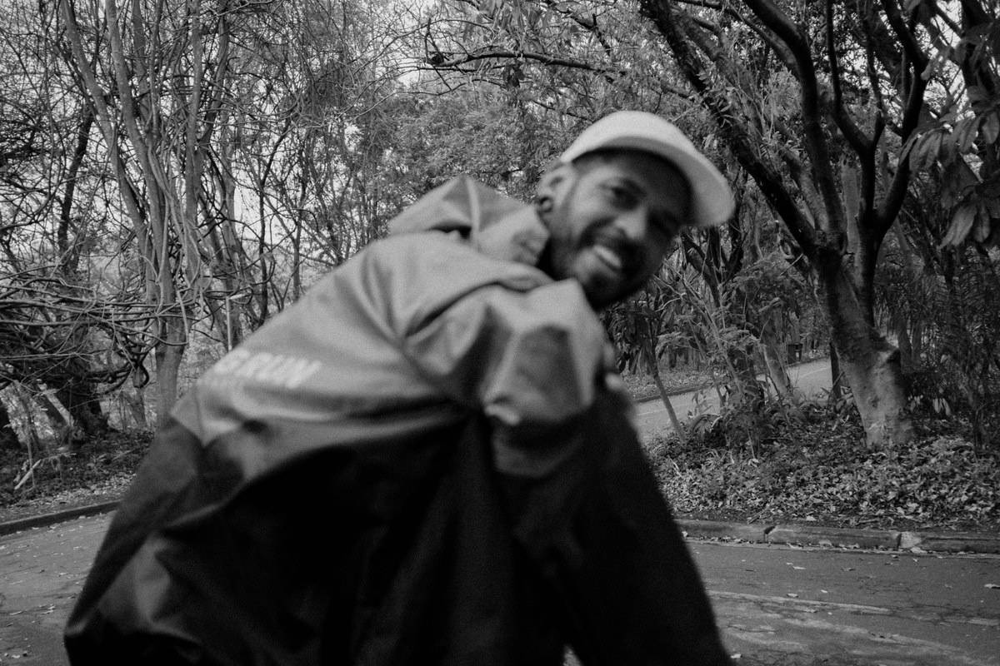
Desenho produtos para serem construídos.
Sou product designer sênior em São Paulo, com 8 anos em produtos complexos: ERP, marketplace B2B, fintech e saúde. Começo pela pesquisa e pelos dados e meço depois. Antes do design, programei front-end, por isso penso cada decisão de interface junto com quem vai construí-la.
São Paulo, (horário local)
Onde trabalhei
Tivita Inventa Olist Stone XP Investimentos, pela Meiuca Goomer
01Cases
Produtos em empresas, com pesquisa, decisões e resultados.
-
Tivita · Healthtech e fincare
Recorrências de convênio
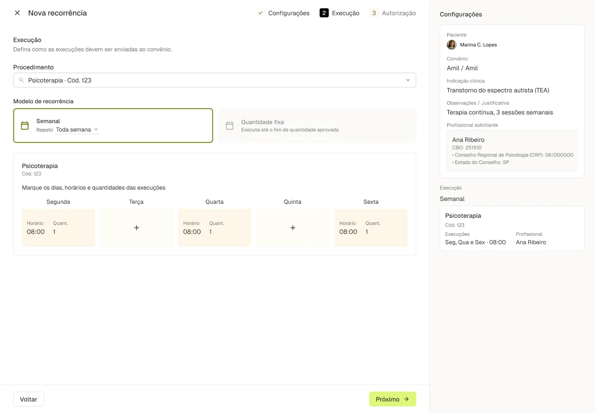
A configuração que ensina uma agente de IA a pedir autorizações e enviar guias sozinha. V1 no ar, iteração com clínicas e redesenho em três etapas.
Agente de IA
configurada pela própria clínica
-
Tivita · Healthtech e fincare
Lotes de convênio
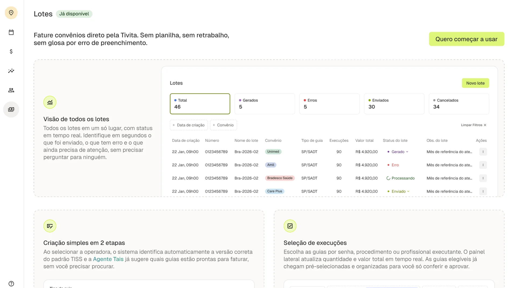
Faturamento de convênio dentro do produto, do zero: da pesquisa com clínicas ABA ao fluxo em produção, com fake door para escolher os beta testers.
Em produção
do discovery ao fluxo no ar
-
Inventa · Marketplace B2B
Cotações no checkout
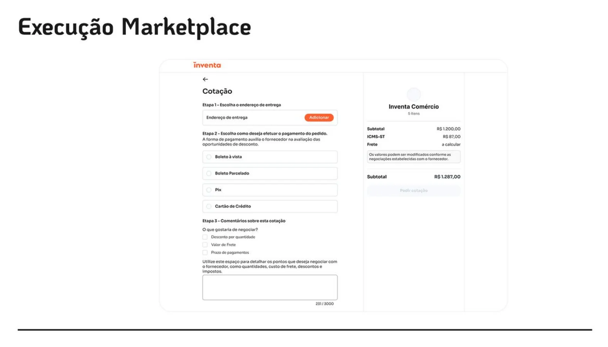
Só metade dos pagamentos iniciados era concluída. Levei a negociação com o fornecedor para dentro do checkout e validamos em teste A/B.
+28%
no ticket médio, em A/B com cerca de 3 mil lojistas
-
Olist · ERP Tiny
Planos e pagamento do Tiny
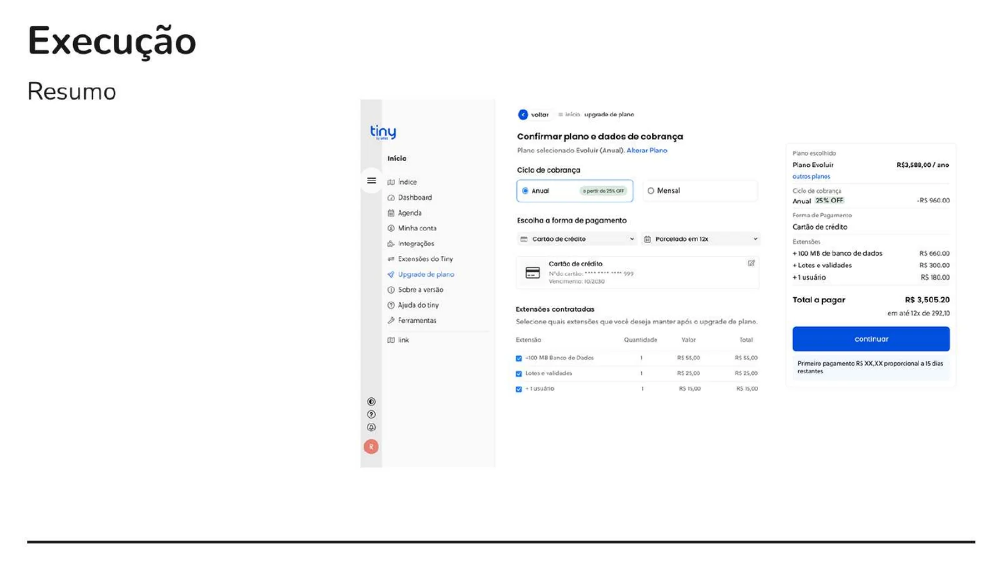
Redesenhei a escolha de plano e o pagamento a partir de dados do Mixpanel e dos chamados de suporte sobre preços.
+16 p.p.
na conversão para o teste grátis, de 78,9% para 95,3%
02Trajetória
-
Tivita
Jun 2024 – Set 2026
Healthtech e fincare. Primeiro designer contratado. Desenhei as primeiras funcionalidades de ponta a ponta e criei a base do design system. Depois, assumi o módulo de automação de guias médicas, do atendimento ao fechamento de lotes, prototipando em código com o Claude Code.
-
Inventa
Jul 2023 – Jun 2024
Marketplace B2B para o varejo. Desenhei o fluxo de cotações do marketplace, para o lojista negociar com o fornecedor antes de pagar, e o MVP do Portal do Fornecedor. Da pesquisa com fornecedores ao teste A/B.
-
Olist
Ago 2021 – Jul 2023
E-commerce. Primeira pessoa de design dedicada ao Tiny. Redesenhei as jornadas de pagamento e de planos e a integração entre Olist e Tiny, unificando cadastro e escolha de planos. Também desenhei o app do lojista, com ajustes rápidos de preço e estoque.
-
Stone
Dez 2020 – Ago 2021
Fintech. Trabalhei no design system e nas primeiras versões da conta digital, na web e no app, onde lojistas gerenciavam cartões, Pix, seguros e empréstimos.
-
Meiuca
Out 2019 – Jun 2020
Consultoria de design. Meu projeto principal foi o design system da XP Investimentos: seis meses mapeando inconsistências entre produtos e construindo os fundamentos visuais e os primeiros componentes para toda a companhia.
-
Goomer
Out 2018 – Out 2019
Tecnologia para restaurantes. Desenhei a gestão de cardápios digitais e a primeira fase dos totens de autoatendimento, com muita pesquisa em campo para entender a rotina dos restaurantes.
03Projetos
Projetos próprios e para clientes, do design à implementação.
-
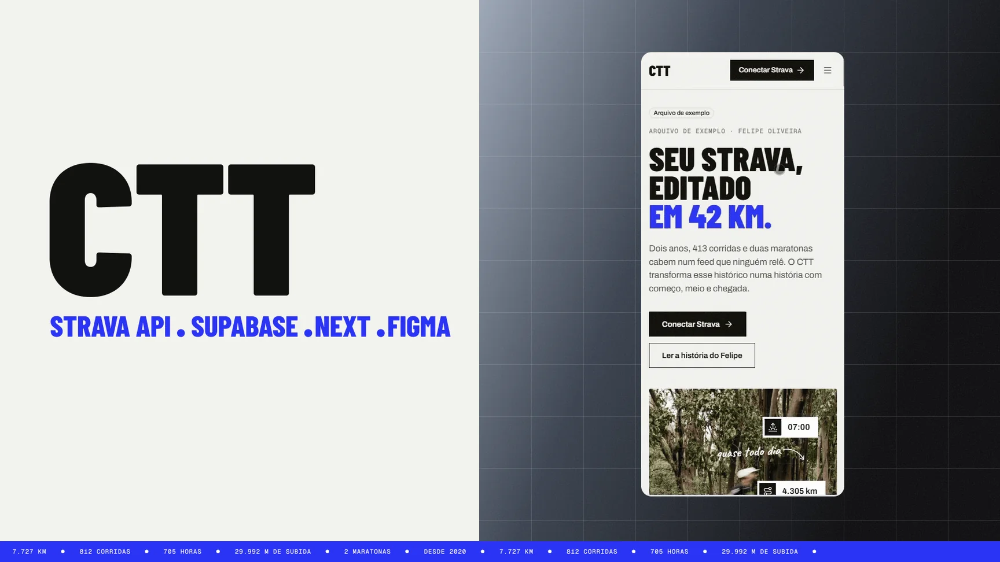
Produto próprio · Design e código
UseCtt
Report editorial que transforma o histórico de treinos do Strava numa maratona, do KM 0 à chegada. Design system no Figma, código em Next.js e dados reais via API do Strava e Supabase.
-
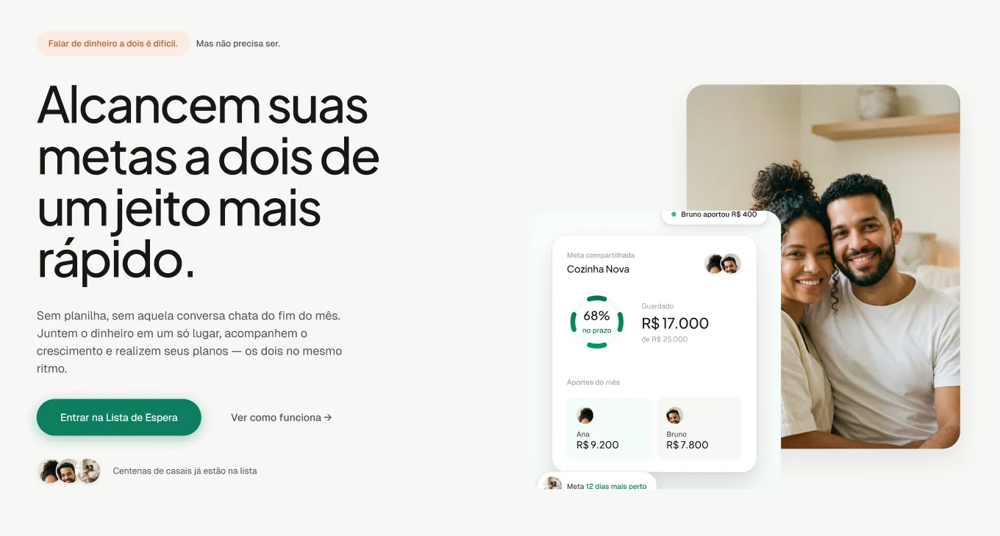
Produto próprio · Landing page e app
nosso+
Landing page publicada para um app de casais que alcançam metas financeiras juntos. Da tese do produto à fotografia, com a landing desenhada no Figma e no ar.
-
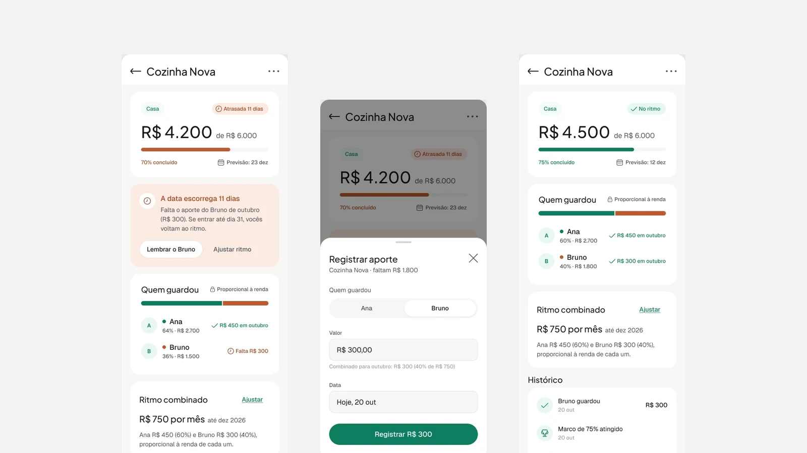
Produto próprio · App mobile
nosso+ app
Ritmo a dois: o fluxo mobile para quando um dos dois atrasa a parte dele da meta. Seis telas sobre convite, atraso, erro e sucesso, com o tom certo para um assunto delicado do casal.
-
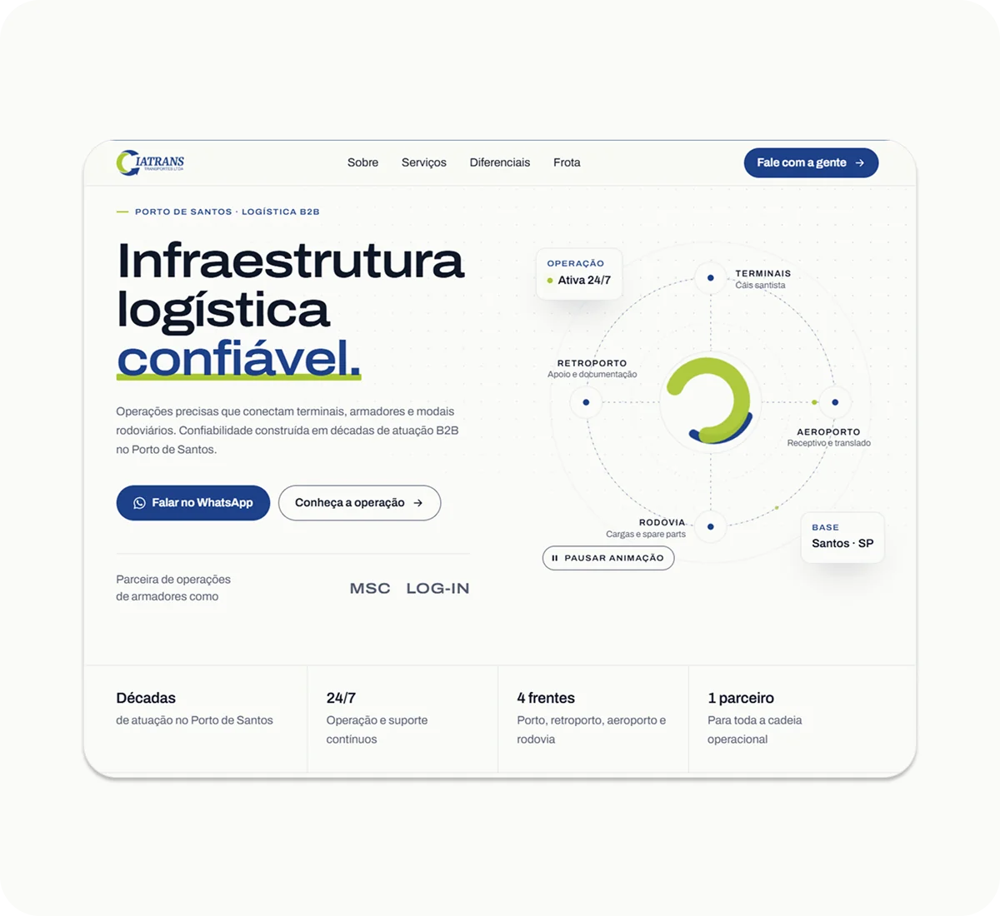
Cliente · Site e design system
CiaTrans
Site, apresentação comercial e design system para uma empresa de logística do Porto de Santos que não tinha nenhum material próprio.
-
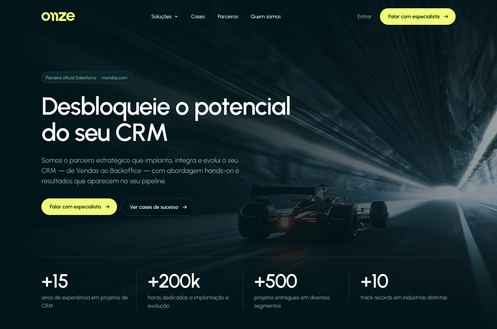
Estudo de redesign · Site e design system
Onze
Redesign do site de uma consultoria de CRM parceira de Salesforce e monday.com, com sistema de componentes e guia de handoff para implementar no Framer.
-
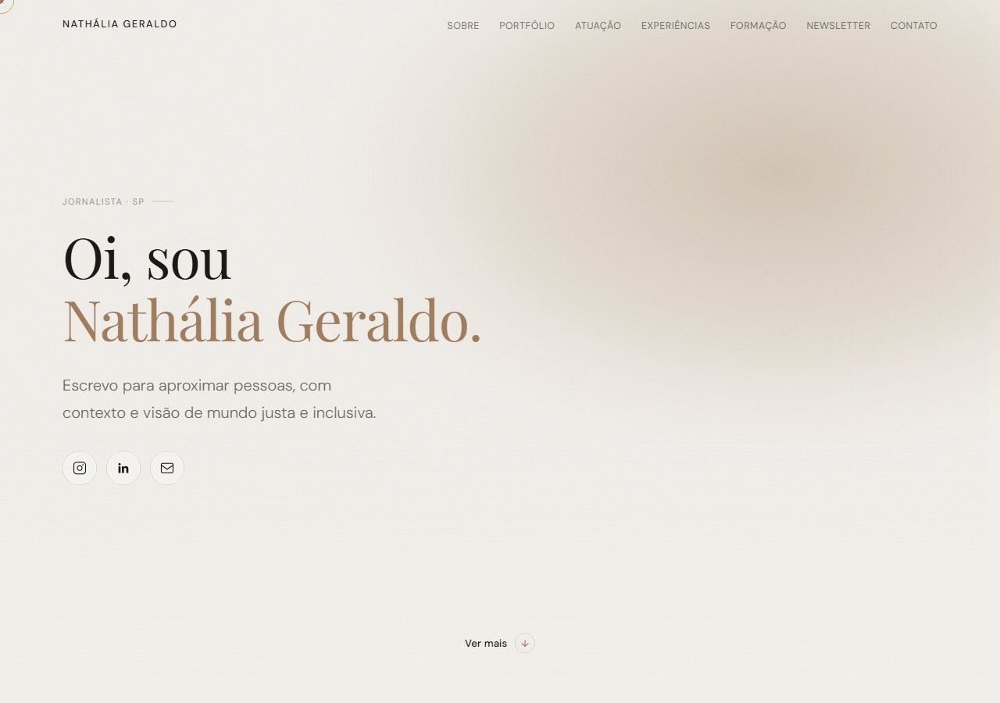
Portfólio editorial
Nathália Geraldo
Portfólio para uma jornalista com 15 anos de carreira, organizado em torno da assinatura editorial dela.
Explorações
Experimentos de interface e implementação.
-
CSS Zen Garden
Duas interpretações visuais para o clássico exercício de CSS puro.
04Sobre
Comecei em tecnologia em 2010, no suporte técnico de uma fábrica de software em Sorocaba. Passei por social media, design e desenvolvimento front-end (saudades, jQuery) antes de chegar a Product Design, em 2019. Essa bagagem define como eu trabalho: entendo o problema, desenho a interface e penso em como ela vai ser construída.
Nos últimos anos trabalhei em produtos complexos e operacionais, de ERP e marketplace B2B a fintech e saúde. Gosto de começar pela pesquisa e pelos dados, testar cedo e medir depois. Foi assim que aumentamos a conversão do trial do Tiny e o ticket médio na Inventa. Design system entra como ferramenta para o produto crescer com consistência, não como fim.
Hoje uso IA no dia a dia para pesquisar, prototipar em código e acelerar o que é repetitivo, sem abrir mão do critério.
Fora das telas, conduzo dinâmicas com times, dou aulas e palestro sobre design.
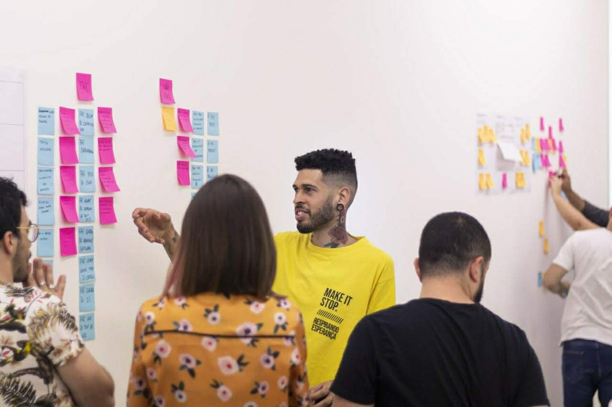
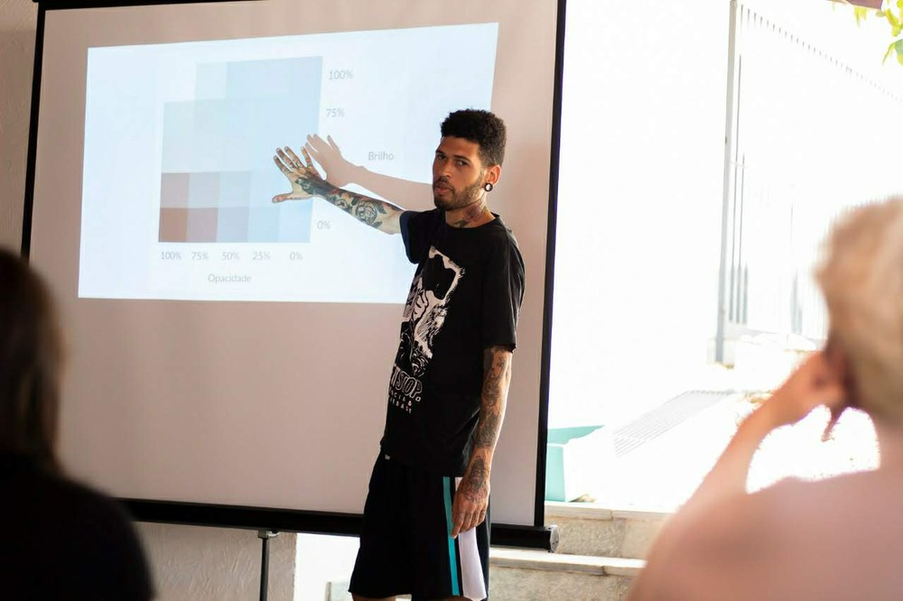
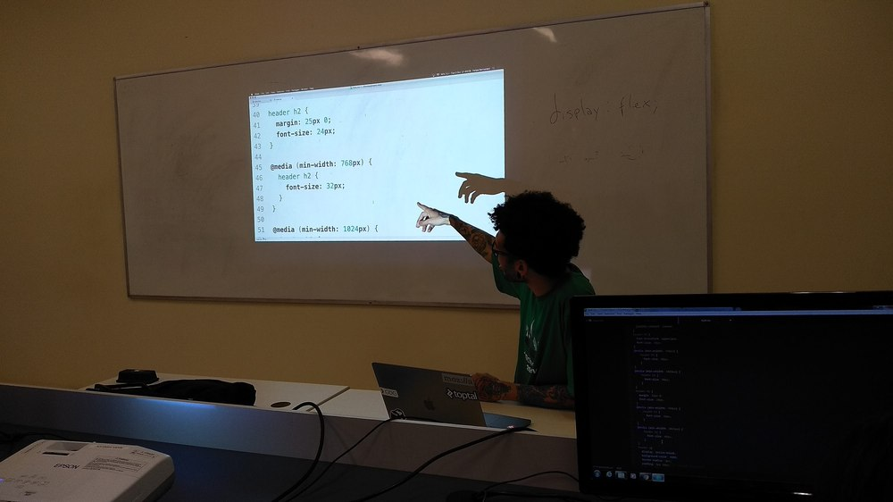
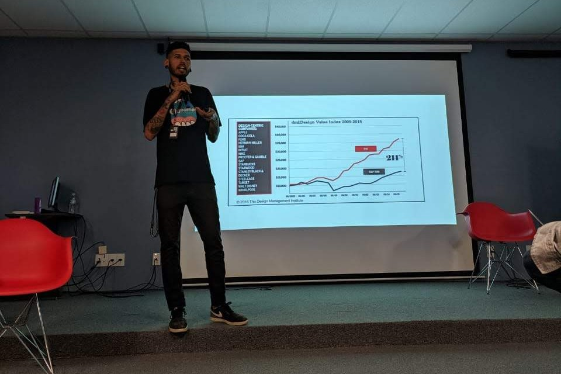
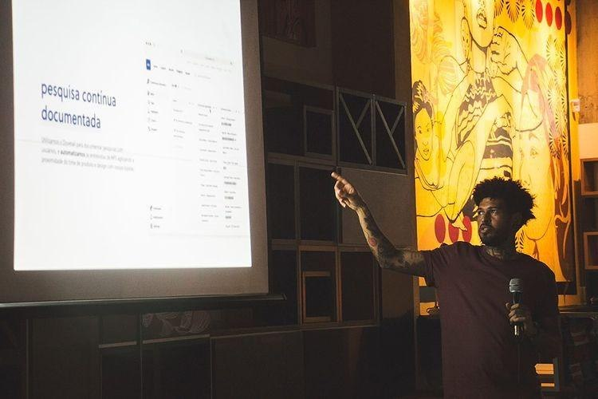
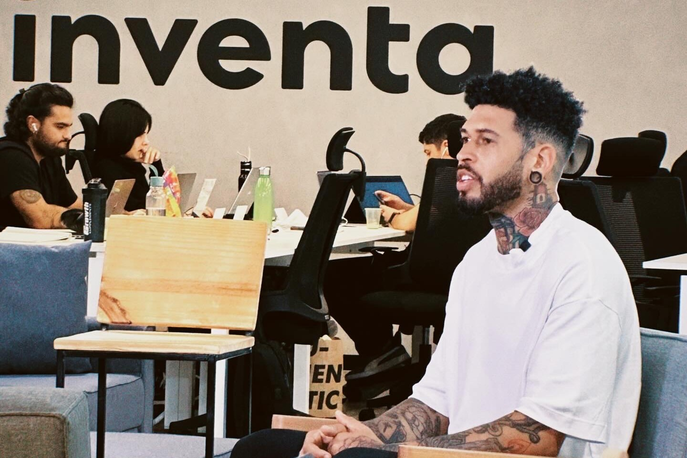
05Contato
Estou aberto a vagas de Product Design sênior.